ClinicusMed · Dossiê Clinicus — Cintura escapular, articulação do ombro e músculos
A aula caminha em duas partes: primeiro as articulações, depois os músculos, organizados por onde eles ligam as peças do esqueleto.
| Bloco | Conteúdo |
|---|---|
| 1. Articulações | Esternoclavicular → acromioclavicular → ligamentos próprios da escápula → glenoumeral (ombro) com bolsas serosas |
| 2. Tronco + cintura escapular | Trapézio · romboides · levantador da escápula · serrato anterior · peitoral menor · subclávio |
| 3. Tronco + úmero | Latíssimo do dorso (dorsal largo) · peitoral maior |
| 4. Cintura escapular + ombro | Deltoide · subescapular · supraespinal · infraespinal · redondo menor · redondo maior · coracobraquial |
A cintura escapular (cíngulo do membro superior) liga o membro livre ao esqueleto axial. A aula lista três articulações:
| Articulação | Une / característica |
|---|---|
| Esternoclavicular | Cintura escapular + tórax (esterno e 1ª cartilagem costal com a clavícula). Sinovial, selar, de movimentos reduzidos. Única ligação sinovial do membro superior ao esqueleto axial. |
| Acromioclavicular | Clavícula + escápula (extremidade lateral da clavícula com o acrômio). Sinovial, com disco articular. |
| Escapulotorácica | Escápula + tórax. Entra na lista da aula por funcionar como articulação do movimento da escápula, mas é uma articulação funcional (fisiológica), sem cápsula nem cavidade sinovial. |
| Aspecto | Descrição |
|---|---|
| Tipo | Sinovial selar (em sela), de mobilidade reduzida (slide). Possui disco articular que a divide em duas cavidades. |
| Superfícies articulares | Esterno (incisura clavicular) · 1ª cartilagem costal (superfície esternal) · clavícula (extremidade esternal) · disco articular (fibrocartilagem) |
| Cápsula | Fibrosa, reforçada pelos ligamentos |
| Ligamentos | Esternoclavicular anterior · esternoclavicular posterior · interclavicular (une as duas clavículas por cima da incisura jugular) · condrocostoclavicular (costoclavicular: 1ª costela/cartilagem → clavícula) |
| Movimentos | Elevação e depressão, protração e retração e rotação da clavícula. A clavícula gira como uma manivela em torno da esternoclavicular, e a acromioclavicular acompanha o movimento da escápula. |
| Aspecto | Descrição |
|---|---|
| Tipo | Sinovial (plana), entre a extremidade lateral da clavícula e o acrômio |
| Superfícies articulares | Clavicular · acromial · disco articular (frequentemente incompleto) |
| Meios de união | Cápsula · ligamentos acromioclaviculares (2) (superior e inferior) · ligamentos coracoclaviculares |
| Ligamento coracoclavicular | Une o processo coracoide à clavícula, em dois feixes: trapezoide (lateral) e conoide (medial). É o que realmente suspende a escápula à clavícula e dá a estabilidade vertical. |
São cintilhas fibrosas estendidas de uma parte a outra da própria escápula (slide 14), sem unir dois ossos diferentes.
| Ligamento | Trajeto e relação |
|---|---|
| Coracoacromial (acromiocoracóideo) | Do processo coracoide ao acrômio. Forma, com os dois processos, o arco coracoacromial: o teto do ombro, sob o qual passam o tendão do supraespinal e a bolsa subacromial. |
| Transverso superior da escápula | Cruza a incisura da escápula e a converte em forame. Nervo supraescapular passa por baixo; a artéria supraescapular passa por cima. |
| Transverso inferior da escápula | Cruza a incisura espinoglenoidal: por ali o nervo e os vasos supraescapulares chegam à fossa infraespinal. |
Une a escápula ao úmero, ou seja, o membro superior à cintura escapular. É sinovial esferóidea (enartrose) e a mais móvel do corpo.
| Aspecto | Descrição |
|---|---|
| Superfícies articulares | Escápula: cavidade glenoidal (rasa, aprofundada pelo lábio glenoidal) · Úmero: cabeça. A cabeça é muito maior que a cavidade: ganha-se mobilidade e perde-se estabilidade. |
| Cápsula | Frouxa; reforçada pelos ligamentos e pelos tendões do manguito rotador |
| Ligamentos (meios de união) | Coracoumeral (do coracoide ao úmero) · glenoumerais: superior, médio e inferior (espessamentos da face anterior da cápsula) |
| Sinovial | Tapiza a face profunda da cápsula; prolonga-se como bainha em torno do tendão da cabeça longa do bíceps no sulco intertubercular |
| Vascularização e inervação (aula) | Artérias circunflexas umerais anterior e posterior · nervo axilar · fibras simpáticas do gânglio cervicotorácico (estrelado) e dos primeiros gânglios torácicos |
| Bolsas serosas (aula) | Subescapular · do tendão da cabeça longa do bíceps · subdeltóidea ou subacromial · bolsas musculares |
A aula (slides 23-26) apresenta os músculos que ligam a cintura escapular ao tronco em três planos:
| Plano | Músculos |
|---|---|
| Plano superficial | Trapézio |
| Plano médio | Romboides · levantador da escápula |
| Plano profundo | Serrato anterior · peitoral menor · subclávio |
Na mesma figura aparecem ECM e omo-hióideo, que são músculos do pescoço que alcançam a cintura (ECM na clavícula/esterno; omo-hióideo na borda superior da escápula). Não fazem parte do grupo.
| Aspecto | Descrição |
|---|---|
| Forma / situação | Músculo superficial, cervicodorsal, triangular (dois trapézios formam um losango) |
| Origem | Osso occipital (linha nucal superior) · ligamento nucal · processos espinhosos das vértebras cervicais e torácicas (C7 a T12) |
| Inserção | Clavícula (terço lateral) · acrômio · espinha da escápula |
| Inervação (aula) | Plexo cervical |
| Irrigação (aula) | Artéria dorsal da escápula (ramo da artéria subclávia) |
| Ação (aula) | Eleva o ombro (ponto fixo no eixo do tronco) · gira a cabeça (ponto fixo na escápula) |
| Ação (por parte) | Superior: eleva a escápula · média: retrai · inferior: abaixa. Superior + inferior giram a escápula para cima, permitindo abdução acima de 90°. |
| Aspecto | Descrição |
|---|---|
| Situação | Subjacente ao trapézio, na parte superior da região dorsal do tórax |
| Origem | Processos espinhosos de C7 a T5 (menor: C7–T1; maior: T2–T5) e ligamento nucal |
| Inserção | Borda medial da escápula |
| Inervação | Nervo dorsal da escápula (plexo braquial) |
| Irrigação | Artéria dorsal da escápula (ramo da artéria subclávia) |
| Ação | Aproxima a escápula da linha mediana (retração); também eleva e roda a escápula para baixo |
| Aspecto | Descrição |
|---|---|
| Situação | Parte lateral da nuca, subjacente ao trapézio |
| Origem | Processos transversos de C1 a C5 (aula) |
| Inserção | Ângulo superomedial da escápula |
| Inervação | Nervo dorsal da escápula (plexo braquial) |
| Irrigação | Artéria dorsal da escápula (ramo da subclávia/axilar, segundo o slide) |
| Ação | Ponto fixo na coluna cervical: eleva a escápula · ponto fixo na escápula: inclina a coluna cervical para o seu lado |
| Aspecto | Descrição |
|---|---|
| Forma | Músculo largo, radiado e potente, na parede lateral do tórax |
| Origem | 2ª a 9ª costelas (a 1ª é inconstante, segundo a aula; os livros descrevem da 1ª à 8ª ou 9ª) |
| Inserção | Borda medial da escápula (face costal) |
| Inervação | Nervo torácico longo (nervo respiratório de Charles Bell), ramo do plexo braquial (C5–C7) |
| Irrigação | Artéria toracodorsal, torácica lateral e ramos perfurantes das intercostais posteriores |
| Ação | Ponto fixo na escápula: inspirador (inspiração forçada) · ponto fixo no tórax: aplica a escápula contra o tórax em todos os movimentos do braço (protração e rotação superior) |
| Aspecto | Descrição |
|---|---|
| Situação | Subjacente ao peitoral maior, de forma triangular |
| Origem | Tórax: 3ª, 4ª e 5ª costelas |
| Inserção | Processo coracoide da escápula |
| Inervação | Nervo peitoral medial (plexo braquial) |
| Irrigação | Artéria toracoacromial (ramos peitorais) |
| Ação | Ponto fixo nas costelas: traciona o processo coracoide para frente e abaixa a escápula · ponto fixo no coracoide: levanta as costelas (inspirador) |
| Aspecto | Descrição |
|---|---|
| Forma | Pequeno músculo, fusiforme, entre a clavícula e a 1ª costela |
| Origem | 1ª costela e sua cartilagem |
| Inserção | Face inferior da clavícula (sulco do subclávio) |
| Inervação | Nervo subclávio (plexo braquial; C5–C6) |
| Irrigação | Artéria toracoacromial (da artéria axilar) |
| Ação | Abaixa a clavícula e a firma na articulação esternoclavicular |
Tronco → úmero. “Lâmina muscular muito extensa, delgada e triangular, de base axial e vértice braquial.”
| Aspecto | Descrição |
|---|---|
| Origem (aula) | Processos espinhosos das 6-7 últimas vértebras torácicas e das 5 lombares · crista mediana do sacro · crista ilíaca · face posterior das 4 últimas costelas · ângulo inferior da escápula |
| Inserção | Úmero: assoalho (fundo) do sulco intertubercular |
| Inervação | Nervo toracodorsal, do plexo braquial (C6–C8) |
| Irrigação | Artéria toracodorsal e artérias intercostais (posteriores/lombares) |
| Ação | Adução do braço · rotação medial · extensão · ação de trepar (ponto fixo no úmero) |
Tem forma de um semicone oco, rodeia a articulação do ombro e une a cintura escapular à diáfise do úmero.
| Aspecto | Descrição |
|---|---|
| Origem | Clavícula (terço lateral) · acrômio · espinha da escápula |
| Inserção | Tuberosidade deltóidea do úmero (V deltóidea) |
| Inervação | Nervo axilar (plexo braquial; C5–C6) |
| Irrigação (aula) | Artéria circunflexa (da artéria axilar): principalmente a circunflexa umeral posterior, com ramo deltóideo da toracoacromial |
| Ação | Abdutor do braço (fibras médias, após os 15° iniciais do supraespinal) · fibras anteriores: flexão e rotação medial · fibras posteriores: extensão e rotação lateral |
Tronco → úmero. Músculo volumoso, tendão em forma de “U” torcido.
| Aspecto | Descrição |
|---|---|
| Origem (aula) | Clavícula (metade medial) · esterno · 7 primeiras costelas e cartilagens · bainha do reto do abdome |
| Inserção | Lábio lateral do sulco intertubercular do úmero |
| Inervação (aula) | Nervo peitoral lateral (plexo braquial) |
| Irrigação | Artéria toracoacromial (da artéria axilar) |
| Ação | Ponto fixo no tórax: adução do braço e rotação medial (parte clavicular também flexiona) · ponto fixo no úmero: ação de trepar |
| Aspecto | Descrição |
|---|---|
| Forma | Músculo grueso, largo e triangular, que preenche a fossa subescapular |
| Origem | Face anterior (costal) da escápula (fossa subescapular) |
| Inserção | Tubérculo menor do úmero |
| Inervação | Nervos subescapulares superior e inferior (plexo braquial) |
| Irrigação | Artéria subescapular e intercostais posteriores |
| Ação | Rotador medial do úmero e adutor (aula: “aductor del húmero y rotador medial”) |
| Aspecto | Descrição |
|---|---|
| Origem | Fossa supraespinal da escápula |
| Inserção | Face superior do tubérculo maior do úmero |
| Inervação | Nervo supraescapular (plexo braquial; C5–C6) |
| Irrigação | Artéria supraescapular |
| Ação | Abdução do úmero (inicia os primeiros 15°) e estabiliza a cabeça na cavidade glenoidal |
| Aspecto | Descrição |
|---|---|
| Origem | Fossa infraespinal |
| Inserção | Tubérculo maior do úmero (troquíter), faceta média |
| Inervação | Nervo supraescapular (plexo braquial) |
| Irrigação | Artéria supraescapular (e circunflexa da escápula) |
| Ação (aula) | Abdutor e rotador lateral do úmero |
| Aspecto | Descrição |
|---|---|
| Origem | Borda lateral da escápula (parte superior) |
| Inserção | Tubérculo maior do úmero (faceta inferior) |
| Inervação | Nervo axilar |
| Irrigação (aula) | Artéria circunflexa (umeral) posterior; também circunflexa da escápula |
| Ação | Rotador lateral do úmero |
| Aspecto | Descrição |
|---|---|
| Origem | Ângulo inferior e borda lateral do omoplata |
| Inserção | Lábio medial do sulco intertubercular do úmero |
| Inervação | Nervo subescapular (inferior), do plexo braquial |
| Irrigação | Artéria subescapular (da artéria axilar) |
| Ação | Adutor e rotador medial do braço (também extensão) |
| Aspecto | Descrição |
|---|---|
| Situação | Na raiz do braço, adiante e medial |
| Origem | Processo coracoide (com a cabeça curta do bíceps) |
| Inserção | Diáfise do úmero (terço médio da face medial) |
| Inervação | Nervo musculocutâneo (plexo braquial; C5–C7): atravessa o músculo |
| Irrigação | Artéria axilar ou umeral (braquial) |
| Ação (aula) | Adutor, rotador medial e anteversor (flexor) do braço |
| Músculo | Nervo (raiz) | Ação principal | Inserção no úmero (quando houver) |
|---|---|---|---|
| Trapézio | Acessório (XI) + C3–C4 (aula: plexo cervical) | Eleva, retrai e abaixa a escápula; roda para cima | — |
| Romboides | Dorsal da escápula (C4–C5) | Retrai a escápula | — |
| Levantador da escápula | Dorsal da escápula (C5; + C3–C4) | Eleva a escápula | — |
| Serrato anterior | Torácico longo (C5–C7) | Protrai a escápula e a roda para cima | — |
| Peitoral menor | Peitoral medial (C8–T1) | Abaixa a escápula | — |
| Subclávio | Nervo para o subclávio (C5–C6) | Abaixa a clavícula | — |
| Latíssimo do dorso | Toracodorsal (C6–C8) | Adução, rotação medial, extensão | Sulco intertubercular (fundo) |
| Peitoral maior | Peitoral lateral e medial (C5–T1) | Adução, rotação medial, flexão | Sulco intertubercular (lábio lateral) |
| Deltoide | Axilar (C5–C6) | Abdução (+ flexão/extensão) | Tuberosidade deltóidea |
| Subescapular | Subescapulares sup. e inf. (C5–C6) | Rotação medial | Tubérculo menor |
| Supraespinal | Supraescapular (C5–C6) | Abdução (inicia) | Tubérculo maior (superior) |
| Infraespinal | Supraescapular (C5–C6) | Rotação lateral | Tubérculo maior (médio) |
| Redondo menor | Axilar (C5–C6) | Rotação lateral | Tubérculo maior (inferior) |
| Redondo maior | Subescapular inferior (C5–C6) | Adução, rotação medial, extensão | Sulco intertubercular (lábio medial) |
| Coracobraquial | Musculocutâneo (C5–C7) | Flexão e adução | Terço médio da face medial do úmero |
O manguito rotador é formado pelos tendões de quatro músculos que se fundem à cápsula do ombro e mantêm a cabeça do úmero contra a glenóide:
| Músculo | Posição | Inserção | Nervo | Ação |
|---|---|---|---|---|
| Supraespinal | Superior | Tubérculo maior (superior) | Supraescapular | Inicia a abdução |
| Infraespinal | Posterior | Tubérculo maior (médio) | Supraescapular | Rotação lateral |
| Redondo menor | Posterior | Tubérculo maior (inferior) | Axilar | Rotação lateral |
| Subescapular | Anterior | Tubérculo menor | Subescapulares | Rotação medial |
Figuras dos slides da Dra. Jasinta Vázquez / Dra. Liz, organizadas pelas seções do capítulo. Clique para ampliar.
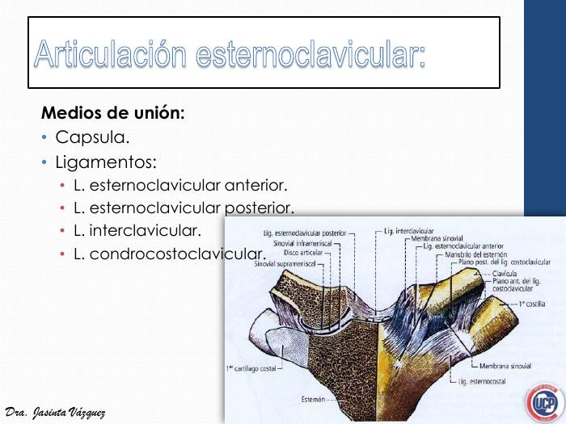
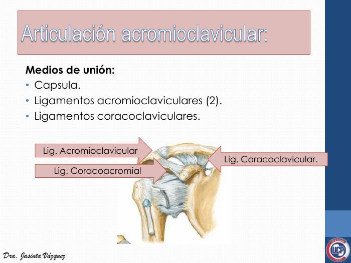
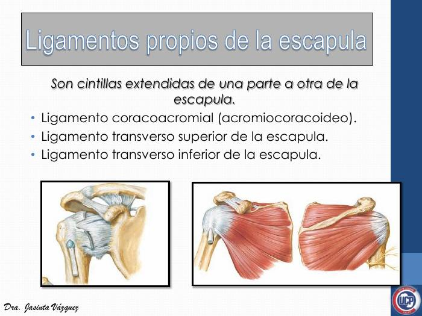
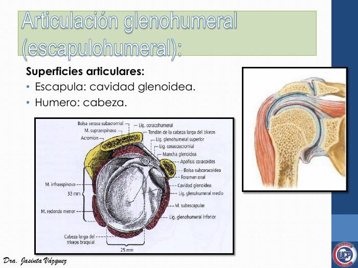
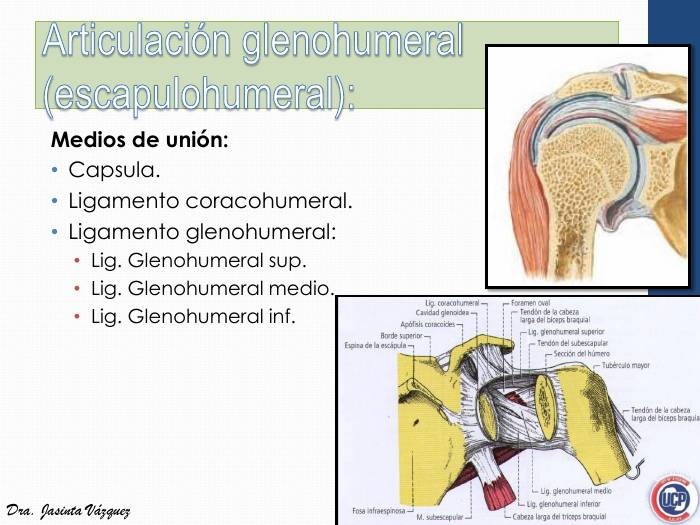
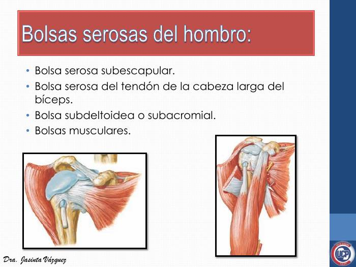
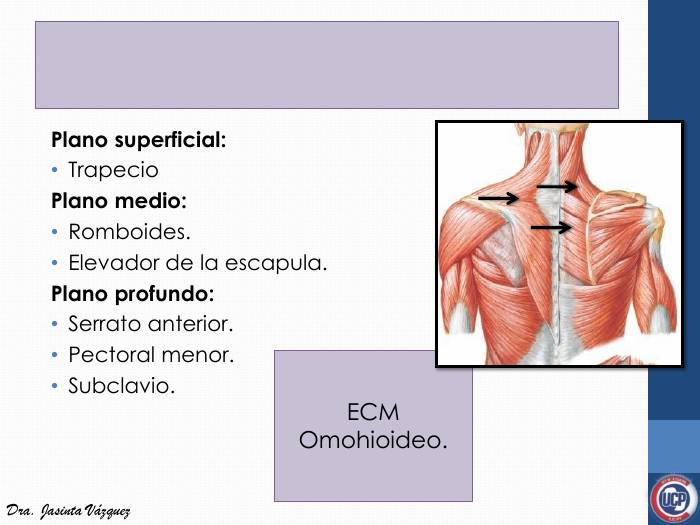
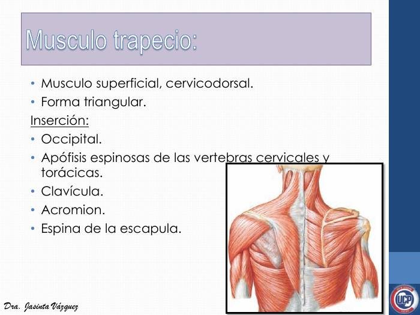
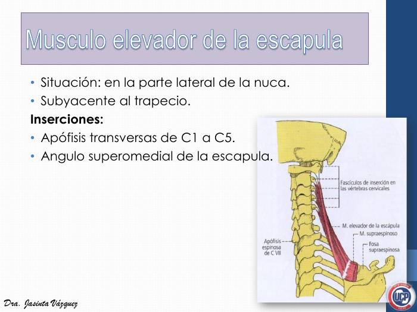
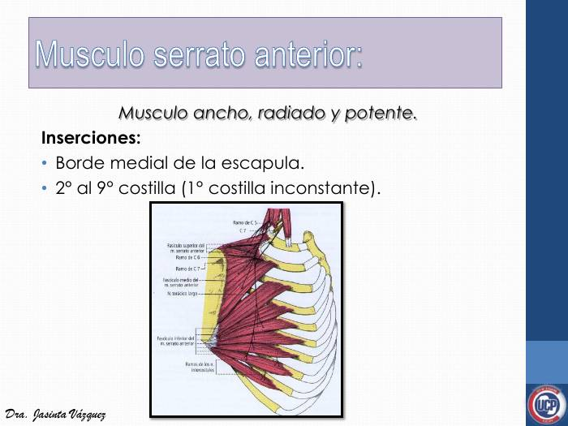
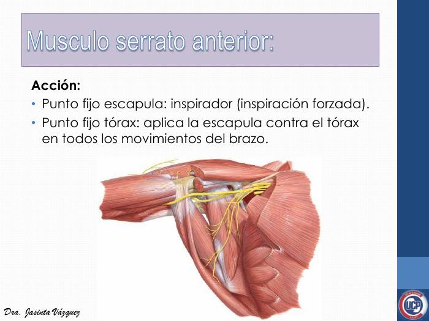
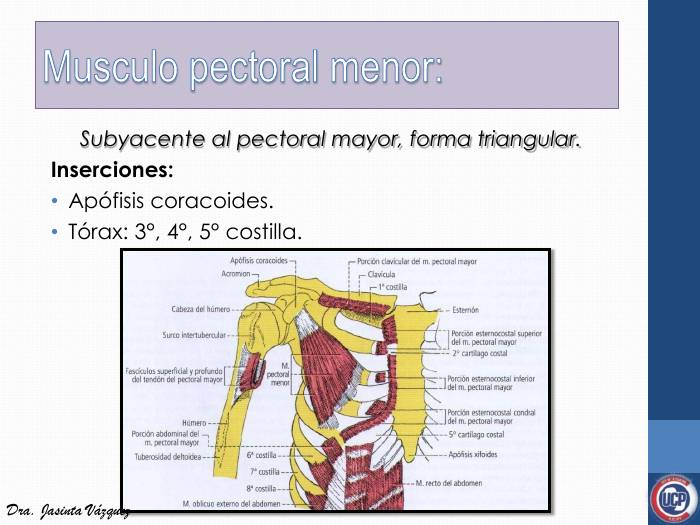
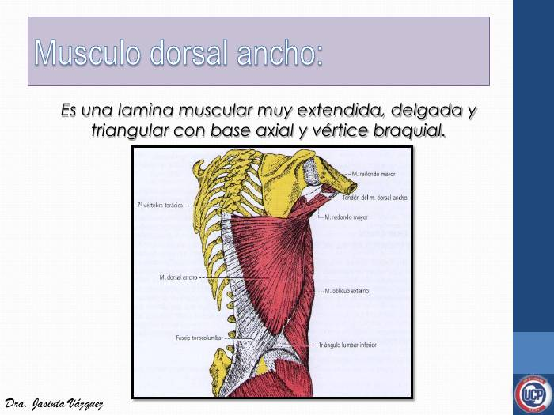
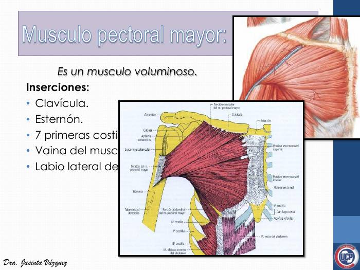
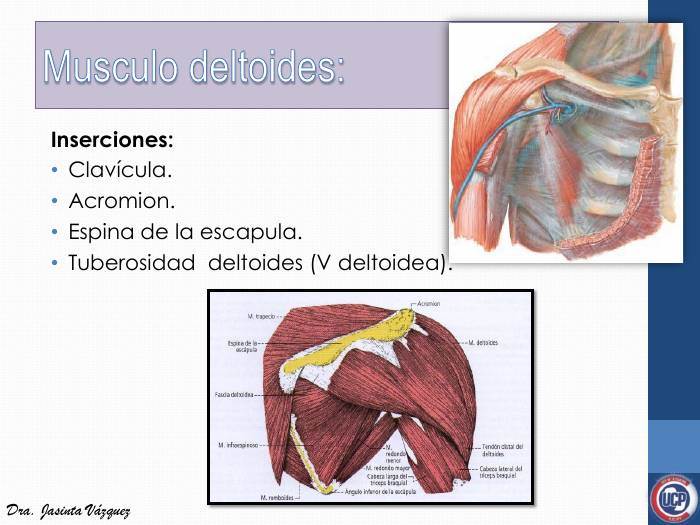
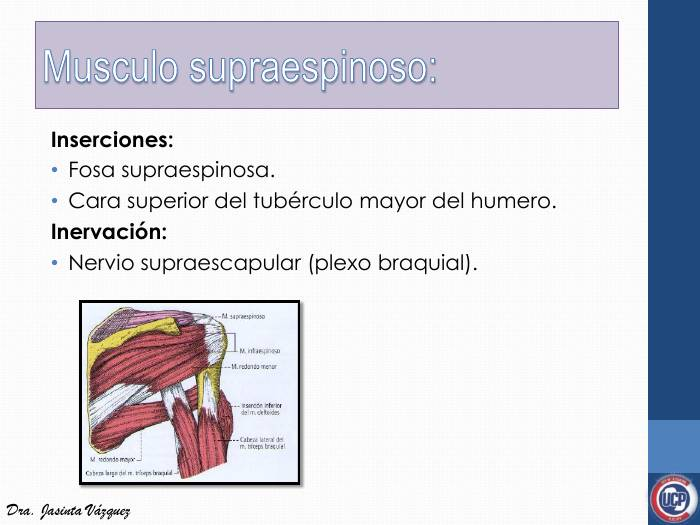
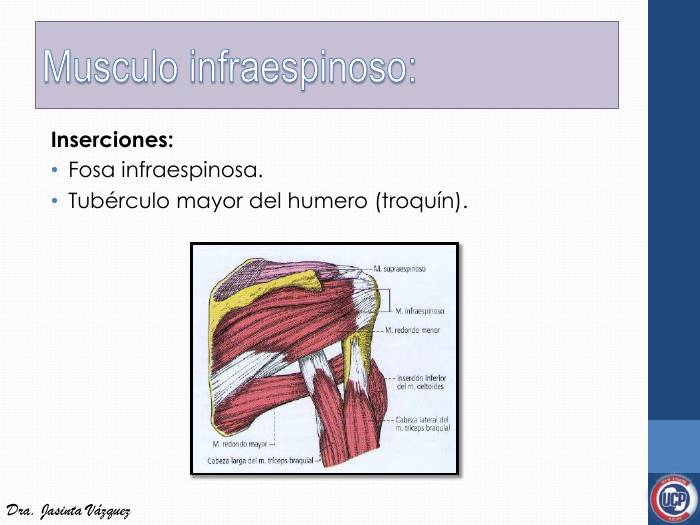
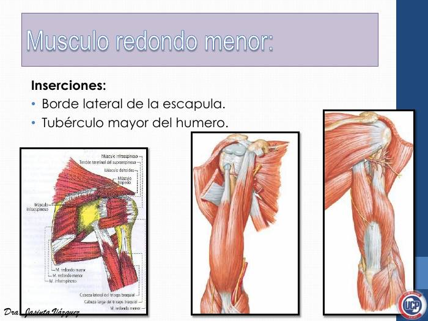
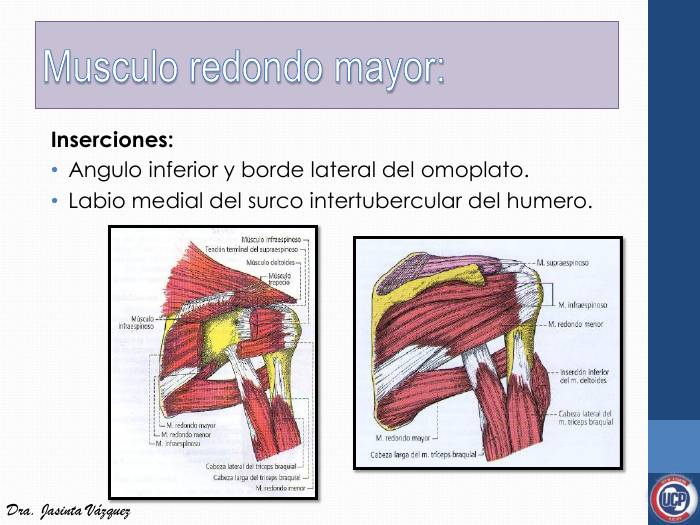
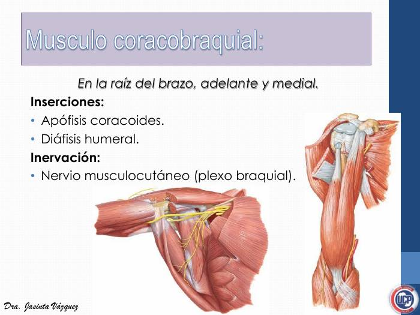
Um atleta em três momentos: a anatomia das articulações, dos músculos e dos nervos do ombro explica cada déficit.
A Clinicus selecionou este conteúdo para complementar seu estudo. Não substitui a leitura do resumo — o resumo ensina, o vídeo reforça.
Carregando recomendações...
O sistema guarda, no seu navegador, quais cards você já sabe bem e quais precisam voltar mais cedo — cada vez que você avalia um card, ele recalcula quando ele deve voltar.
12 questões, do mais básico ao mais puxado. Escolhe uma alternativa, depois clica em "Ver comentário completo" — vale a pena ler até quando você acerta, porque o comentário explica cada alternativa, não só a certa.